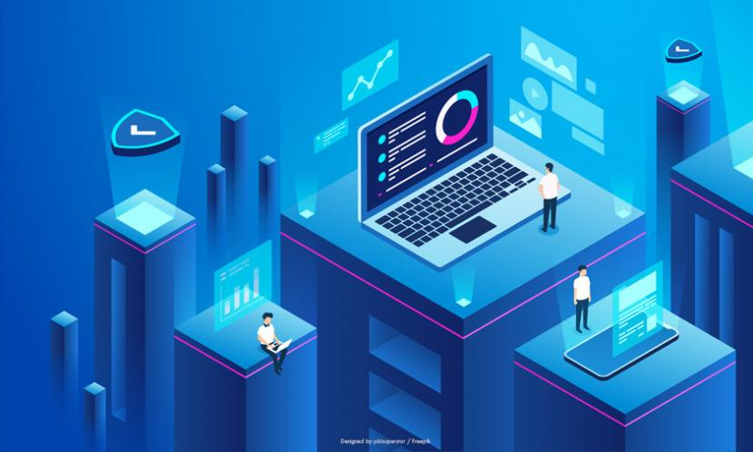

Myprofil

halo, perkenalkan saya dwi maulana siddiq saya adalah mahasiswa yang sedang mengejar suatu cita-cita yaitu menjadi programmer. saat ini, saya berusia 19 tahun dan sedang menjalani pendidikan di sebuah perguruan tinggi di daerah saya. saat ini saya menempuh program sarjana S1 dalam bidang teknologi. di STMIK IKMI CIREBON, prodi SISTEM INFORMASI. dan saya tinggal di suatu daerah yang ada di kabupaten cirebon. dan saya, tinggal bersama kedua orang tua saya, saya adalah anak ke tiga...
Seorang programmer haruslah bisa memiliki kemampuan coding dan bahasa pemrograman yang canggih. Sehingga dia bisa menciptakan suatu program atau aplikasi yang hebat dan dan sulit untuk dicari celah kekurangannya.
MyActivities

Hybrid IT, dalam bentuknya yang paling sederhana, adalah ampuran dari platform infrastruktur IT dan cloud hybrid lama pada lokasi publik maupun pribadi yang digunakan perusahaan untuk menempatkan beban kerja aplikasi dan kebutuhan datanya. Seperti yang telah ditunjukkan oleh penelitian global, ada manfaat yang dapat dikenali dari IT Hybrid termasuk, peningkatan kelincahan bisnis (46 persen), peningkatan layanan pelanggan (41 persen) dan pengembangan produk yang lebih cepat (34 persen). Namun, dengan konvergensi beberapa teknologi dan model pengiriman layanan, mengelola model TI hybrid menjadi sangat kompleks. Apa yang dulu ada di satu pusat data sekarang mencakup geografi, mitra, cloud hybrid & sistem lama, dan aplikasi.
Perkembangan peradaban manusia dari zaman pra-sejarah hingga zaman modern tidak terlepas dari bidang komunikasi dan informasi. Kecanggihan teknologi informasi dan komunikasi yang kita nikmati saat ini adalah hasil dari evolusi yang akan tetap terus berlanjut hingga masa mendatang.